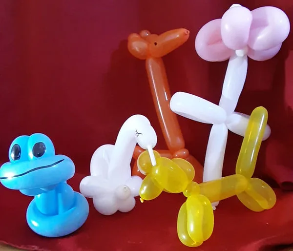
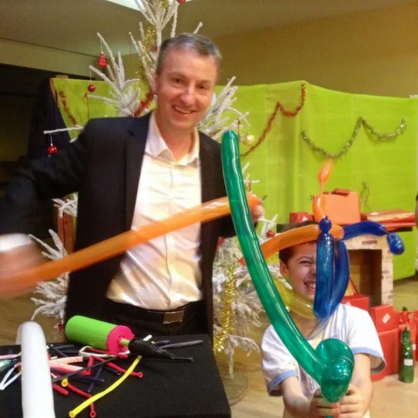
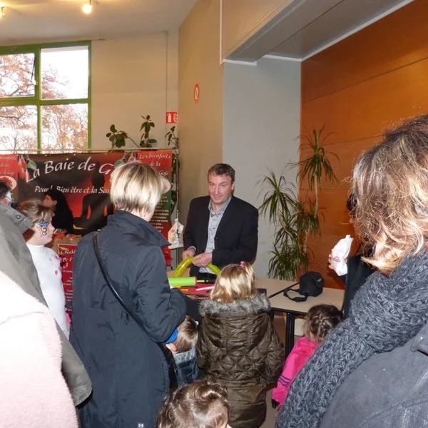
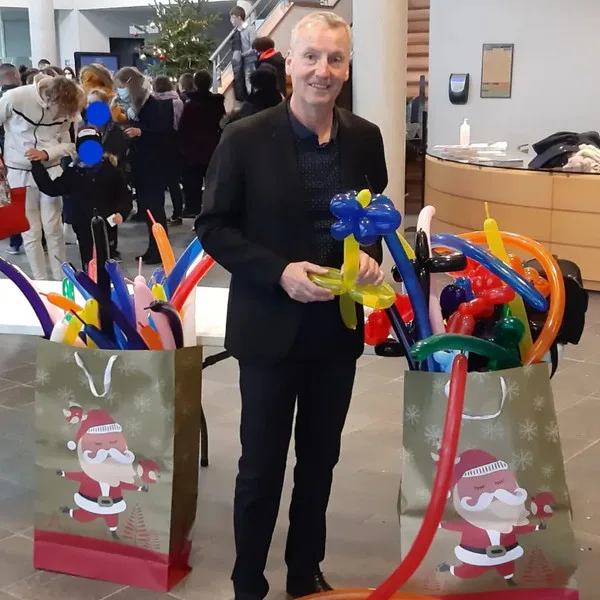

Comment se déroule une animation sculpture sur ballons ?
La sculpture sur ballons plaît à coup sûr aux enfants et amuse aussi les adultes. Francis réalise des créations colorées à la demande : animaux (chiens, girafes, papillons), fleurs, épées, couronnes et personnages. Chaque sculpture est offerte à l'enfant ou à l'invité, en quelques minutes de modelage.
Cette animation est idéale pour compléter un spectacle de magie ou un close-up, mais elle fonctionne aussi très bien seule. Elle s'adapte parfaitement aux événements en extérieur comme en intérieur : foires, kermesses, inaugurations, fêtes de village, marchés de Noël et événements familiaux.
Francis intervient à Issoudun, Châteauroux, Bourges, Vierzon et dans tout le Centre-Val de Loire. Il peut réaliser entre 15 et 25 sculptures par heure selon la complexité des créations demandées, en interaction directe avec le public.
Parfait en complément du close-up ou du spectacle enfants pour prolonger la magie. Chaque enfant repart avec sa création !
Pour quelles occasions ?
- Foires, kermesses et fêtes de village
- Marchés de Noël et inaugurations
- Anniversaires et fêtes d'enfants
- Événements publics et privés
- En complément d'un spectacle ou d'un close-up
Des créations sur mesure pour chaque événement
Chaque fête est différente, et Francis adapte ses sculptures sur ballons au thème et au public de votre événement. Son répertoire est vaste : chiens, girafes, papillons, perroquets et toute une ménagerie colorée pour les plus jeunes, mais aussi des fleurs, des épées, des couronnes, des chapeaux, des coeurs et même des personnages de dessins animés. À Issoudun comme à Châteauroux ou Bourges, les enfants n'hésitent jamais à faire la queue pour choisir leur création préférée !
Pour les mariages et événements romantiques, Francis propose des créations élégantes aux couleurs du couple : coeurs entrelacés, bouquets de fleurs en ballons, arches décoratives et petites attentions sculptées pour les invités. Ces créations apportent une touche de fantaisie et de couleur qui surprend toujours agréablement, que ce soit lors du vin d'honneur dans l'Indre ou d'une réception dans le Cher.
Les événements d'entreprise ne sont pas en reste. Francis peut réaliser des figurines promotionnelles, des sculptures aux couleurs de votre marque et des créations thématiques en lien avec votre activité. Journées portes ouvertes à Vierzon, inaugurations à Châteauroux, séminaires en Centre-Val de Loire : la sculpture sur ballons attire l'attention, crée du lien et laisse un souvenir tangible entre les mains de vos clients et collaborateurs. Selon la complexité des modèles, Francis produit entre 15 et 25 sculptures par heure, garantissant un flux continu qui maintient l'animation vivante tout au long de l'événement.
Pourquoi ajouter la sculpture sur ballons à votre événement ?
L'atout majeur de la sculpture sur ballons, c'est sa capacité à créer de la joie visible et immédiate. Voici pourquoi tant d'organisateurs dans l'Indre et le Centre-Val de Loire choisissent cette animation :
- Un souvenir que l'on emporte. Contrairement à un tour de magie qui vit dans la mémoire, la sculpture sur ballons offre à chaque enfant un cadeau concret et coloré qu'il brandit fièrement en quittant la fête.
- Un spectacle visuel en soi. Les couleurs vives des ballons sculptés égayent instantanément n'importe quel lieu, qu'il s'agisse d'une salle des fêtes à Issoudun ou d'un parc à Bourges.
- Une animation tout-terrain. En intérieur comme en extérieur, debout, en déambulation ou installé à un stand, Francis s'adapte à toutes les configurations. Foire de village, kermesse d'école, marché de Noël : l'animation fonctionne partout.
- La transition parfaite. Entre le repas et le spectacle, pendant l'attente du gâteau ou après la cérémonie : la sculpture sur ballons comble naturellement les temps morts et maintient l'ambiance festive.
- Une atmosphère contagieuse. Un seul enfant portant un ballon en forme de girafe suffit à attirer tous les autres. L'animation se nourrit d'elle-même et crée un pôle d'attraction joyeux.
- Le complément idéal d'un spectacle de magie. Francis combine régulièrement sculpture sur ballons et close-up ou spectacle pour enfants. Les deux prestations se renforcent mutuellement et offrent une expérience complète à vos invités, partout dans l'Indre et le Cher.
« La famille, les amis et une jolie touche de magie et d'humour tout au long de la soirée. Sculptures de ballons pour les enfants, close-up pendant le repas et petit spectacle qui a conquis petits et grands. Un immense merci ! »
— Elodie Locatelli, avis Google
Questions fréquentes sur la sculpture sur ballons
Combien de sculptures par heure Francis peut-il réaliser ?
Entre 15 et 25 sculptures par heure selon la complexité. Les créations simples (épée, fleur) prennent 1 à 2 minutes, les plus élaborées (personnages, animaux multi-ballons) environ 3 à 5 minutes.
La sculpture sur ballons peut-elle se faire en extérieur ?
Oui, c'est même l'un de ses points forts ! L'animation fonctionne très bien en plein air lors de fêtes de village, kermesses ou marchés. Seule contrainte : éviter le vent fort ou la pluie.
La sculpture sur ballons peut-elle accompagner un spectacle de magie ?
Absolument, c'est même l'une des combinaisons les plus demandées ! Francis peut sculpter des ballons avant ou après le spectacle, ou encore pendant le cocktail ou le goûter. Les enfants adorent choisir leur sculpture et regarder le ballon prendre forme entre les mains du magicien. Cette formule combinée est disponible dans tout l'Indre, le Cher et le Centre-Val de Loire.
En images




Autres prestations
Envie de magie pour votre événement ?
Parlez-en à Francis : il vous répond personnellement et établit un devis gratuit sous 24 heures.
Issoudun · Indre · Centre-Val de Loire